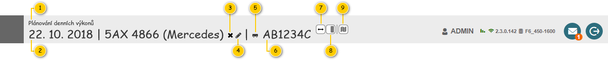
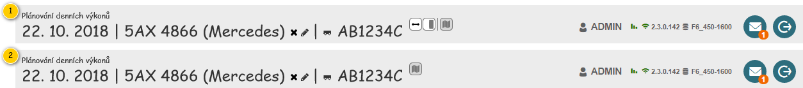

Stručný popis
Hlavička slouží především pro zobrazení základních informací o Denním výkonu a vychází z jejího obecného popisu – viz . Navíc je doplněna o tlačítka umožňující provedení dalších akcí.
Uživatelské rozhraní
Rozložení
Drátový diagram

Přehled UI komponent
| Callout | Komponenta | Nadpis | Typ komponenty | Příklad hodnoty | Hodnota | Výchozí hodnota | Formát | Zpřístupněná | Viditelná | Chování | Validace | Poznámka |
|---|---|---|---|---|---|---|---|---|---|---|---|---|
| 1 | Název modulu | – | Label | – | Pevně daný text:
| – | – | – | Vždy | – | – | – |
| 2 | Identifikace denního výkonu | – | Label | 22. 10. 2018 | 5AX 4866 (Mercedes) | Entita Denní výkon. | – | Pokud není hodnota atributu Textová identifikace vozidla k dispozici a zároveň je k Dennímu výkonu přiřazeno Vozidlo (atribut Vozidlo), je v rámci položky Pokud není hodnota atributu Textová identifikace vozidla k dispozici a zároveň není splněna předchozí podmínka:
Pevně daný text „Vozidlo nepřiřazeno“ je pak vypsán méně výraznou barvou textu. | – | Vždy | – | – | – |
| 3 | Zrušení přiřazení vozidla | – | Button
| – | – | – | – | Vždy | Pokud má uživatel právo na editaci Denního výkonu (EDIT_RP_DAILY_ROUTES, viz Oprávnění na typ entity). Pokud byl Denní výkon vytvořen uživatelem – hodnota atributu Vytvořen uživatelem je rovna TRUE. Pokud je na Denní výkon přiřazeno Vozidlo – hodnota atributu Vozidlo je různá od NULL. Pokud je denní výkon v jednom z dále uvedených stavů (atribut Stav):
| Spustí 200UC06: Odebrat vozidlo denního výkonu, na vstup UC jsou předány následující hodnoty:
Pokud je tlačítko zobrazeno a uživatel na něj najede myší, je zobrazena bublinková nápověda s pevně daným textem:
| – | – |
| 4 | Změna přiřazeného vozidla | – | Button
| – | – | – | – | Vždy | Pokud má uživatel právo na editaci Denního výkonu (EDIT_RP_DAILY_ROUTES, viz Oprávnění na typ entity). Pokud byl Denní výkon vytvořen uživatelem – hodnota atributu Vytvořen uživatelem je rovna TRUE. Pokud je denní výkon v jednom z dále uvedených stavů (atribut Stav):
| Pokud je k odpovídajícímu Dennímu výkonu přiřazeno vozidlo (hodnota atributu Vozidlo je různá od NULL): Spustí 200UC05: Změnit vozidlo denního výkonu, na vstup UC jsou předány následující hodnoty:
Jinak: Spustí 200UC04: Přiřadit vozidlo dennímu výkonu, na vstup UC jsou předány následující hodnoty:
Pokud je tlačítko zobrazeno a uživatel na něj najede myší, je zobrazena bublinková nápověda s pevně daným textem:
| – | – |
| 5 | Použití přívěsu | – | ToggleButton
| – | – | – | – | Pokud má uživatel právo na editaci Denního výkonu (EDIT_RP_DAILY_ROUTES, viz Oprávnění na typ entity). Pokud je denní výkon v jednom z dále uvedených stavů (atribut Stav):
| Pokud atribut Typ dopravy entity Denní výkon nabývá jedné z uvedených hodnot:
| Pokud je tlačítko stisknuto (TRUE): spustí , na vstup UC jsou předány následující hodnoty:
Jinak (FALSE): spustí , na vstup UC jsou předány následující hodnoty:
Pokud je tlačítko zobrazeno a uživatel na něj najede myší, je zobrazena bublinková nápověda s pevně daným textem:
| – | Pokud není tlačítko viditelné, není zobrazen ani oddělovač před ním. |
| 6 | Identifikace přiřazených přívěsů | – | Label | AB1234C | Entita Přívěs – atribut Použité přívěsy entity Denní výkon. | – | Pokud je obsažen více než jeden Přívěs:
Pokud není žádný Přívěs k dispozici:
Pokud není u Přívěsu hodnota atributu RZ k dispozici, je místo ní zobrazen zástupný text: Pokud uživatel nemá právo na konkrétní Přívěs, je místo hodnoty zobrazen zástupný text: | – | Vždy | Formát zobrazení použitých přívěsů | – | – |
| 7 | Změna pořadí panelů | – | ToggleButton
| – | – | – | – | Vždy | Pokud je spuštěn režim zobrazení mapy v samostatném okně:
Jinak:
| Pokud je tlačítko stisknuto TRUE, je změněno pořadí panelů: Jinak je nastaveno výchozí pořadí panelů: Pokud je tlačítko zobrazeno a uživatel na něj najede myší, je zobrazena bublinková nápověda s pevně daným textem:
| – | – |
| 8 | Skrytí panelu s detailními informacemi | – | ToggleButton
| – | – | – | – | Vždy | Pokud je spuštěn režim zobrazení mapy v samostatném okně:
Jinak:
| Stisknutí tlačítka provede skrytí/zobrazení panelu. Pokud je tlačítko stisknuto, je panel zobrazen, jinak je panel skryt.
Pokud je tlačítko zobrazeno a uživatel na něj najede myší, je zobrazena bublinková nápověda s pevně daným textem:
| – | – |
| 9 | Zobrazení mapy v samostatném okně | – | ToggleButton
| – | – | – | – | Vždy | Vždy | Stisknutí tlačítka provede zapnutí/vypnutí režimu zobrazení mapy v samostatném okně. Pokud je tlačítko stisknuto, je režim spuštěn, jinak režim spuštěn není. Stisknutí tlačítka při vypnutém režimu – spustí , na vstup UC jsou předány následující hodnoty:
Stisknutí tlačítka při spuštěném režimu – spustí , na vstup UC jsou předány následující hodnoty:
Pokud je tlačítko zobrazeno a uživatel na něj najede myší, je zobrazena bublinková nápověda s pevně daným textem:
| – | – |
Chování
Formát zobrazení použitých přívěsů
V případě, že je k Dennímu výkonu přiřazen alespoň jeden Přívěs, je tato informace zobrazena přímo v hlavičce obrazovky. Pokud je pak obsažen více než jeden Přívěs, jsou jednotlivé Přívěsy odděleny čárkou. Pokud dojde k situaci, kdy není možné zobrazit úplný výčet Přívěsů, je vypsána pouze jejich část. Po najetí myši na získaný text je pak zobrazena bublinková nápověda s jeho úplným zněním, viz obrázek.

Rozložení v režimu zobrazení mapy v samostatném okně
V rámci režimu zobrazení mapy v samostatném okně jsou pro jeden modul otevřeny 2 záložky prohlížeče – v každé je pak hlavička přizpůsobena konkrétnímu obsahu obrazovky:
- Primární část obrazovky – rozložení jako takové je zachováno, proto jsou k dispozici jednotlivé ovládací prvky pro změnu rozložení.
- Sekundární část obrazovky – obsahuje pouze mapu. Nejsou tedy zobrazena tlačítka pro skrytí jednotlivých panelů (komponenta 2).

Grafický návrh
Revize
3. 3. 2023: Tomáš Nadrchal
| Odkaz | Stručný popis změny/doplnění |
|---|---|
| Rozložení | Doplněna možnost nastavit přívěs pro typ dopravy Cisterna (naznačeno modře). |
4. 10. 2019: Tomáš Nadrchal
Provedeny změny v rámci celého dokumentu dle požadavků v M10 (naznačeno modře).
9. 7. 2019: Miroslav Slivoně
| Odkaz | Stručný popis změny/doplnění |
|---|---|
| Přehled UI komponent | Použití přívěsu – funkčnost povolena pro typ dopravy Valník. |
22. 1. 2019: Tomáš Nadrchal
| Odkaz | Stručný popis změny/doplnění |
|---|---|
| Přehled UI komponent | Doplněn popis viditelnosti tlačítka pro nastavení přívěsu. |